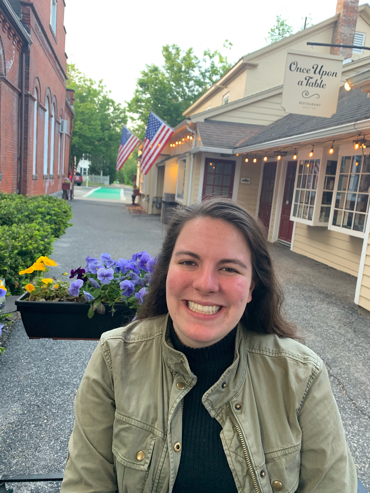

Juliana Viola
Hi there! My name is Juliana, and I'm a Software Engineer at Google based out of Cambridge, MA.
Prior to joining Google:
- [2017-2022] Earned my Bachelors in Computer Science & Mathematics from Yale University. Was also selected as
one
of ~20 Education Studies Scholars in my class
- [2018-2022] Undergraduate Learning Assistant for two courses at Yale: Introduction to Computer Science (CPSC
201) and Mathematical Tools for Computer Science (CPSC 202)
- Slides I made for a midterm review session in 2018
- [2020-2021] Full-Stack Engineering Intern and then full-time Software Engineer at Humu
- [2020] Engineering Project Manager Intern at Apple
- [2019] Explore Intern at Microsoft
- [2017] Software Engineering Intern at the Broad Institute of MIT & Harvard
Outside of work, I like reading, listening to podcasts, cooking vegetarian food, doing Peloton rides,
cross-stitching, watching gymnastics, and solving crossword puzzles. I'm passionate about education, mental health,
and diversity in tech.
Currently I'm trying to learn as much as I can about product management.
Books I've Read in 2025
- No One Is Talking About This by Patricia Lockwood
- Inspired: How to Create Tech Products Customers Love by Marty Cagan
- Brotopia: Breaking Up the Boys' Club of Silicon Valley by Emily Chang
- Mad Honey by Jodi Picoult and Jennifer Finney Boylan
- Elon Musk by Walter Isaacson
- Brave New Words: How AI Will Revolutionize Education by Salman Khan
- The One World Schoolhouse: Education Reimagined by Salman Khan
- Slow AF Run Club: The Ultimate Guide for Anyone Who Wants to Run by Martinus Evans
- Fat Talk: Parenting in the Age of Diet Culture by Virginia Sole-Smith
Podcasts I Like
Contact
You can reach me at julianaviola98@gmail.com.